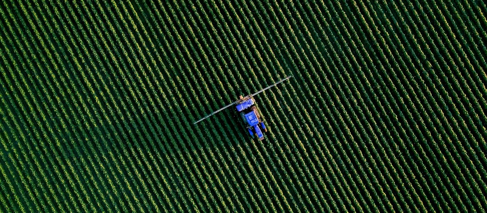
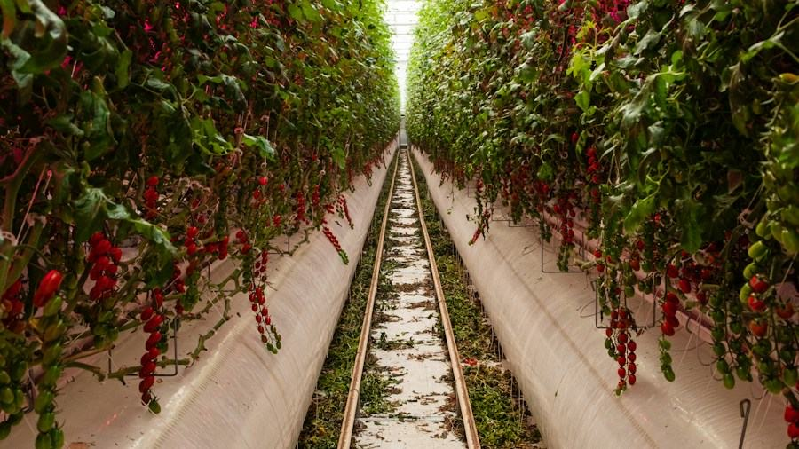
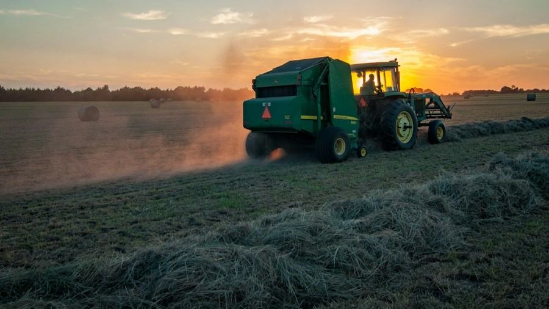

How Technology Is Transforming Agriculture for a Smarter Future

Agriculture is undergoing its most significant transformation in generations. From AI-guided tractors navigating rows of crops to satellite systems monitoring soil moisture in real time, the convergence of digital technology and farming practice is redefining what it means to grow food at scale.
For decades, agricultural productivity relied on incremental improvements — better seeds, more efficient machinery, refined fertiliser schedules. Today, the pace of change has accelerated sharply. Digital AgTech platforms now integrate data from sensors, drones, weather stations, and satellite imagery to give farmers a granular view of their fields that was simply impossible a decade ago.
The implications are profound not just for yields, but for the environmental footprint of food production. When a farmer knows exactly which rows need irrigation, or precisely which sections of a field are under pest pressure, they can respond with surgical precision rather than blanketing entire fields with water or chemicals. That efficiency translates directly into cost savings — and into lower emissions, reduced runoff, and healthier soils.
From Data to Decision: The New Farm Operating System
Modern AgTech platforms are increasingly built around a single idea: closing the loop between field observation and farm management decisions. Sensors embedded in soil collect pH, moisture, and nutrient data throughout the day. That data flows into cloud platforms where machine learning models detect patterns, flag anomalies, and surface recommendations.
What makes this generation of tools different from earlier precision agriculture is the accessibility. Where legacy systems required expensive hardware installations and specialist operators, newer platforms are increasingly delivered via smartphone apps with affordable subscription pricing — bringing advanced analytics within reach of smallholder farmers across Asia, Africa, and Latin America.

Connectivity as Infrastructure: Bridging the Last Mile
Technology is only as powerful as its reach. One of the most persistent challenges in AgTech adoption has been the connectivity gap — rural farming communities that lack the broadband or mobile data infrastructure to run cloud-connected platforms reliably.
A new generation of solutions is tackling this head-on. Edge computing devices that pre-process data locally and sync to the cloud when connectivity allows. Offline-first mobile applications designed to function fully without a constant data connection. Low-Earth orbit satellite networks offering affordable broadband access in regions that terrestrial infrastructure will never economically serve.
In parallel, partnerships between AgTech companies and telecommunications providers are beginning to treat rural connectivity as an agricultural input — as fundamental to modern farming as seed or fertiliser. Governments across Southeast Asia and sub-Saharan Africa are increasingly treating digital agricultural infrastructure as a food security imperative, not a luxury.
“The most important precision agriculture tool in the next decade will be a smartphone with a reliable data connection — not a tractor with GPS.”
— Dr. Amara Osei, Director of Agricultural Innovation, CGIAR
Climate Adaptation and the Long Game
Climate change has elevated the urgency of AgTech adoption from a productivity conversation to a survival conversation. As rainfall patterns become less predictable, growing seasons shift, and extreme weather events multiply, the margin for error in farm management narrows.
Digital platforms are now being developed explicitly around climate resilience. Decision-support tools that model the impact of different planting dates, irrigation strategies, or crop varieties under projected climate scenarios. Carbon accounting platforms that allow farmers to measure, verify, and monetise carbon sequestered in their soils through regenerative practices.

The challenge now is speed — scaling proven technologies from pilot programmes to adoption across millions of smallholder farms before climate pressures outpace the agricultural system’s capacity to adapt. That requires not just better technology, but better delivery: extension services digitally augmented, input supply chains that bundle advisory services with products, and financing mechanisms that reduce the adoption risk for farmers with thin margins.
Looking Ahead
The next five years will be decisive. As artificial intelligence matures, as sensor costs fall further, and as connectivity reaches remote agricultural areas, the tools available to farmers will become more powerful and more accessible simultaneously. The question is no longer whether technology can transform agriculture — it demonstrably can — but whether the ecosystems supporting adoption can scale fast enough to matter.
Digital AgTech will continue tracking the companies, research institutions, and policy environments shaping that future. The stakes — food security for a planet of 10 billion people — could not be higher.